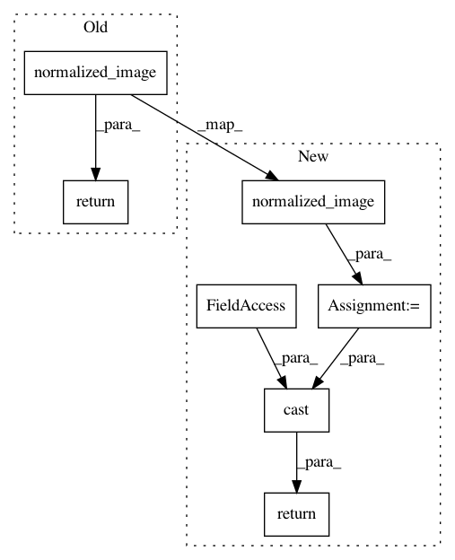

1528c46499cdcff669b5d7c006b7b971884ad0e6,scripts/tf_cnn_benchmarks/preprocessing.py,RecordInputImagePreprocessor,preprocess,#RecordInputImagePreprocessor#Any#Any#Any#,489
Before Change
// image = tf.cast(image, tf.uint8) // HACK TESTING
return normalized_image(image)
def parse_and_preprocess(self, value, batch_position):
image_buffer, label_index, bbox, _ = parse_example_proto(value)
image = self.preprocess(image_buffer, bbox, batch_position)
After Change
// image = tf.cast(image, tf.uint8) // HACK TESTING
normalized = normalized_image(image)
return tf.cast(normalized, self.dtype)
def parse_and_preprocess(self, value, batch_position):
image_buffer, label_index, bbox, _ = parse_example_proto(value)
image = self.preprocess(image_buffer, bbox, batch_position)
In pattern: SUPERPATTERN
Frequency: 3
Non-data size: 7
Instances
Project Name: tensorflow/benchmarks
Commit Name: 1528c46499cdcff669b5d7c006b7b971884ad0e6
Time: 2018-03-20
Author: zhengxq@google.com
File Name: scripts/tf_cnn_benchmarks/preprocessing.py
Class Name: RecordInputImagePreprocessor
Method Name: preprocess
Project Name: tensorflow/benchmarks
Commit Name: 1528c46499cdcff669b5d7c006b7b971884ad0e6
Time: 2018-03-20
Author: zhengxq@google.com
File Name: scripts/tf_cnn_benchmarks/preprocessing.py
Class Name: Cifar10ImagePreprocessor
Method Name: preprocess
Project Name: tensorflow/benchmarks
Commit Name: 1528c46499cdcff669b5d7c006b7b971884ad0e6
Time: 2018-03-20
Author: zhengxq@google.com
File Name: scripts/tf_cnn_benchmarks/preprocessing.py
Class Name: TestImagePreprocessor
Method Name: minibatch